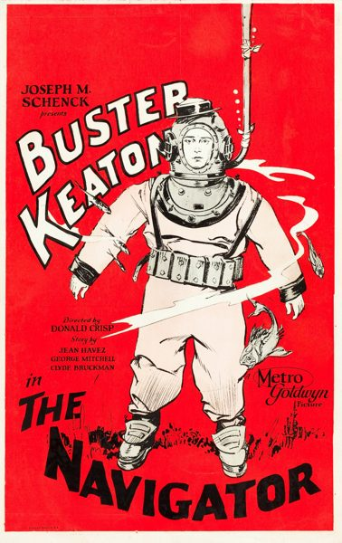

The Navigator
Starring: Buster Keaton, Kathryn McGuire, Noble Johnson
Director: Donald Crisp, Buster Keaton
Writer: Clyde Bruckman, Jean Havez, Joseph A. Mitchell
Producer: Buster Keaton
The Navigator is a 1924 American comedy film directed by and starring Buster Keaton. The film was written by Clyde Bruckman and co-directed by Donald Crisp. In 2018, the film was selected for preservation in the United States National Film Registry by the Library of Congress as being "culturally, historically, or aesthetically significant."
Watch Online: Internet Archive
Trivia
- After the disappointing reception of Sherlock Jr., Keaton and his production team's morale was low and they were looking for a project that would be both exciting and successful.
- Gabourie was told that a film production could do anything with the ship, including set it on fire or sink it.
- Gabourie rushed back to Los Angeles to tell Keaton about the ship.
Previous Showings
6 Runs • 3 Festivals
All runs on record (6):
- August 19, 1992
- August 30, 1995
- August 14, 1996
- August 15, 2001Summer 2001
- September 12, 2007Summer 2007, including Films Starring Fred Astairew/ Steamboat Bill, Jr.
- July 29, 2011Summer 2011w/ The Cameraman